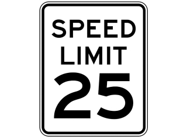
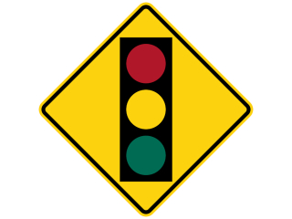
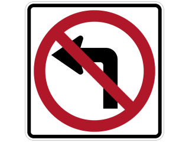
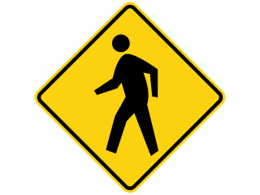
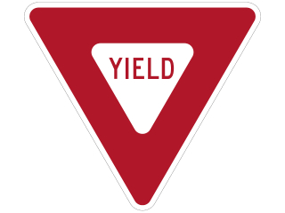
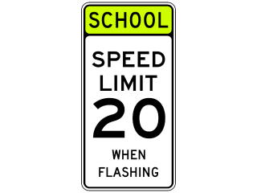
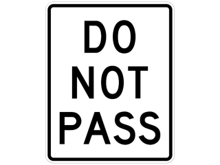

Project Summary
Need help deciphering all the traffic signs you see along the road? Look no further for the Traffic Sign Detector has you covered.
Simply point the camera at the sign and let the convolution neural network do the rest!
How it Works
The image from the camera is coverted to grayscale and compressed to 32x32. Then, the convolution neural network running on our custom RISC-V processor makes a prediction from 47 possible signs. Finally, the predicted sign is displayed on the monitor.Example Signs






